パワクエ 西球記
神前試合まとめ
パワクエ「西球記（さいきゅうき）」の神前試合をまとめました。
対戦相手一覧
神前試合で選べる対戦相手ごとに、進化対象の特殊能力と固有スカウト選手候補をまとめました。
コラボ以外の別バージョンキャラはコーチ人数+2以上がほぼ確定で付くのでオススメです。
固有スカウト選手候補を既に全員チームに加入させた状態だと、チームとは無関係の契約書が出現します。
乱馬チーム※11/26まで

- 進化対象
- 真・変幻自在
真・電光石火 - 固有スカウト選手候補
- 早乙女乱馬の契約書
天道あかねの契約書
良牙チーム※11/26まで

- 進化対象
- 真・アーチスト
真・強心臓 - 固有スカウト選手候補
- 響良牙の契約書
シャンプーチーム※11/26まで

- 進化対象
- 真・広角砲
真・金縛り - 固有スカウト選手候補
- シャンプーの契約書
瞬鋭野球流
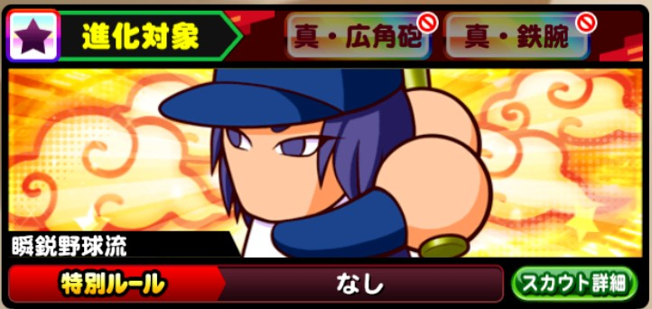
- 進化対象
- 真・広角砲
真・鉄腕 - 固有スカウト選手候補
- ［求道者］才賀侑人の契約書
烏丸剛充の契約書
才賀侑人の契約書
小平陽向の契約書
北雪野球流

- 進化対象
- 真・勝負師
真・電光石火 - 固有スカウト選手候補
- 八尺巫女子の契約書
矢部田亜希子の契約書
小嵐リョウの契約書
美園千花の契約書
覇堂野球流

- 進化対象
- 真・怪物球威
真・鉄腕 - 固有スカウト選手候補
- 金原いずるの契約書
木場嵐士の契約書
土門季音の契約書
水鳥忍の契約書
くろがね野球流
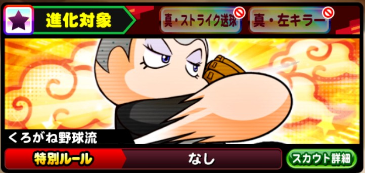
- 進化対象
- 真・ストライク送球
真・左キラー - 固有スカウト選手候補
- 大鐘餅太郎の契約書
宝塚月斗の契約書
祝井幸吉の契約書
銭形乱蔵の契約書
パピヨンの契約書
あかつき野球流

- 進化対象
- 真・球界の頭脳
真・勝負師 - 固有スカウト選手候補
- 八嶋中の契約書
四条賢二の契約書
二宮瑞穂の契約書
七井＝アレフトの契約書
三本松一の契約書
一ノ瀬塔哉の契約書
九十九宇宙の契約書
五十嵐権三の契約書
六本木優希の契約書
猪狩守の契約書
［好敵手］猪狩守の契約書
天空中央野球流
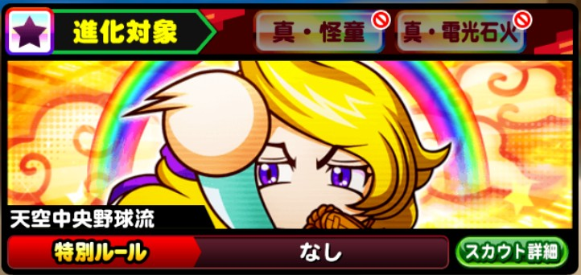
- 進化対象
- 真・怪童
真・電光石火 - 固有スカウト選手候補
- 東雲翔也の契約書
神成尊の契約書
虹谷誠の契約書
［秘密兵器］虹谷彩理の契約書
支良州水産野球流

- 進化対象
- 真・アーチスト
真・怪童 - 固有スカウト選手候補
- 須々木清吾の契約書
［カロリーバースト］赤原の契約書
真黒綱寛の契約書
真開伊瑠花の契約書
深見和仁の契約書
メカニクス野球流

- 進化対象
- 真・電光石火
真・左キラー - 固有スカウト選手候補
- 魁竜司の契約書
千賀篤志の契約書
江暦輝の契約書
鳴響野球流
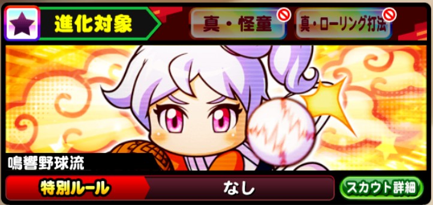
- 進化対象
- 真・怪童
真・ローリング打法 - 固有スカウト選手候補
- 志藤玲美の契約書
大越清亮の契約書
伊能麗示の契約書
円卓野球流

- 進化対象
- 真・アーチスト
真・怪童 - 固有スカウト選手候補
- 望戸紅の契約書
阿麻央真の契約書
岸田卓の契約書
ランスロットの契約書
［キング］阿麻の契約書
マントル野球流

- 進化対象
- 真・ローリング打法
真・安打製造機 - 固有スカウト選手候補
- 黒衛隆富の契約書
道満里沙の契約書
堂江竜河の契約書
伍歩倫人の契約書
小掘灯花の契約書
［匠の技］堂江の契約書
フリート野球流
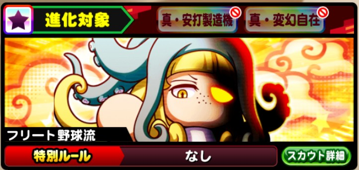
- 進化対象
- 真・安打製造機
真・変幻自在 - 固有スカウト選手候補
- 清江留萌の契約書
梶杏嘉の契約書
梶増人の契約書
沖野海里の契約書
真開彩葉の契約書
館橋水奈都の契約書
［挑戦！］泡瀬の契約書
オクタヴィアの契約書
［ライダー］梶増人の契約書
［たゆたう水月］清江留萌の契約書
アンドロメダ野球流

- 進化対象
- 真・変幻自在
真・鉄腕 - 固有スカウト選手候補
- ジャベリンの契約書
大西＝ハリソンの契約書
ガジェット落合の契約書
DJB-Kの契約書
［CUTIE］DJB-Kの契約書
嵐丸士朗の契約書
［アンドロメダ］大西の契約書
アスレテース野球流

- 進化対象
- 真・電光石火
真・ストライク送球 - 固有スカウト選手候補
- カイル・モラレスの契約書
茂古葉萌子の契約書
塚見リフターの契約書
塚見巴の契約書
ミンミンの契約書
［再起の灯］戸内聖華の契約書
オーランド・ディクソンの契約書
花丸野球流

- 進化対象
- 真・怪童
真・勝負師 - 固有スカウト選手候補
- ピンクの契約書
ブラックの契約書
レッドの契約書
東優の契約書
白瀬芙喜子の契約書
雨崎優輝の契約書
討総野球流
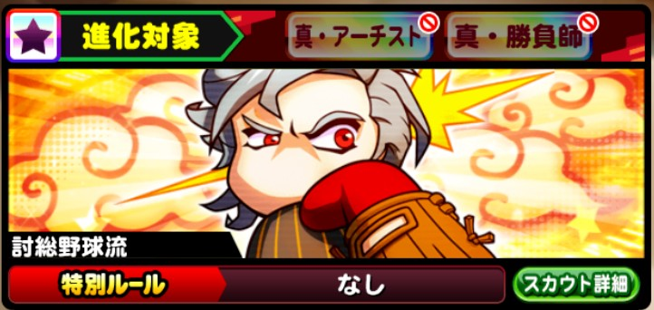
- 進化対象
- 真・アーチスト
真・勝負師 - 固有スカウト選手候補
- 佐渡摩智の契約書
宮田良哉の契約書
キリルの契約書
シュバリエの契約書
佐渡至皇理の契約書
ケヒャールの契約書
エジプト野球流

- 進化対象
- 真・強心臓
真・怪物球威 - 固有スカウト選手候補
- 日向ららの契約書
建石十斗の契約書
ヌウビスの契約書
セティーヌの契約書
ホールスアン4世の契約書
ニャプテトの契約書
天盟野球流
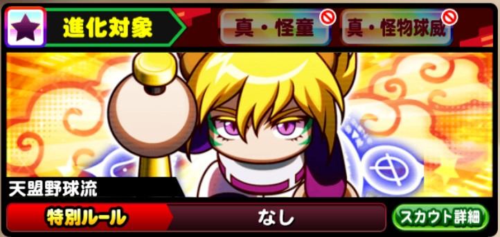
- 進化対象
- 真・怪童
真・怪物球威 - 固有スカウト選手候補
- 敷上マニィの契約書
戸草鏡の契約書
天宮果也乃の契約書
高原曲の契約書
［ピクニック］高原曲の契約書
彩菊花野球流

- 進化対象
- 真・鉄腕
真・電光石火 - 固有スカウト選手候補
- 時任幽平の契約書
泉谷未来の契約書
物茂渡の契約書
［占い師］泉谷未来の契約書
大筒野球流
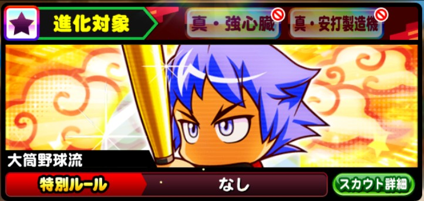
- 進化対象
- 真・強心臓
真・安打製造機 - 固有スカウト選手候補
- ［大筒］冴木創の契約書
テキート・ヤールゼンの契約書
鹿莫翔太の契約書
井伊野嘉元の契約書
宇佐崎詠子の契約書
ゲノム野球流

- 進化対象
- 真・怪童
真・ストライク送球 - 固有スカウト選手候補
- 瀧上輝汐の契約書
尾上亜月の契約書
明神陽の契約書
竹内脅人の契約書
夜神極の契約書
ほかほか野球流
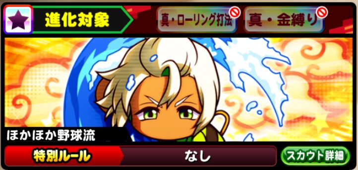
- 進化対象
- 真・ローリング打法
真・金縛り - 固有スカウト選手候補
- 東風平晴来の契約書
休森遊の契約書
白浜浅海の契約書
帝王実業野球流
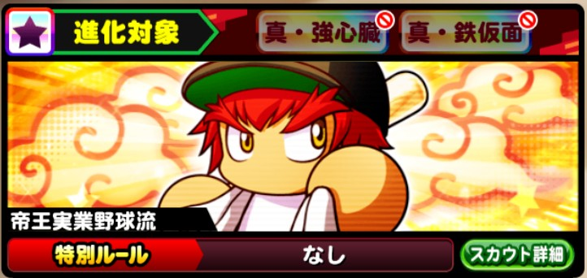
- 進化対象
- 真・強心臓
真・鉄仮面 - 固有スカウト選手候補
- 猫神優の契約書
蛇島桐人の契約書
峰本遊児の契約書
［帝王実業］友沢亮の契約書
猛田慶次の契約書
山口賢の契約書
石張理の契約書
犬河和音の契約書
楠糸律の契約書
久遠ヒカルの契約書
白轟野球流
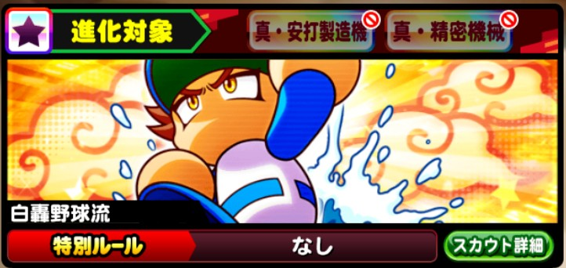
- 進化対象
- 真・安打製造機
真・精密機械 - 固有スカウト選手候補
- 鷹栖礼文の契約書
紋別青葉の契約書
［白轟］北斗八雲の契約書
長命野球流
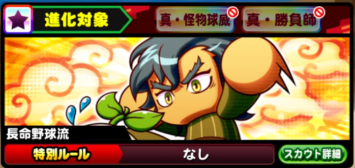
- 進化対象
- 真・怪物球威
真・勝負師 - 固有スカウト選手候補
- ガナル・波羅の契約書
久留米美加の契約書
ゼルヴィー・ハイゼンベルクの契約書
赤壁野球流
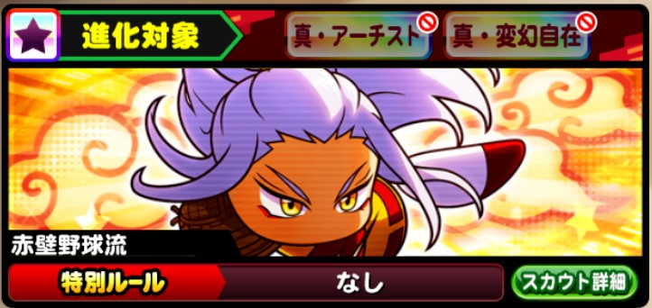
- 進化対象
- 真・アーチスト
真・変幻自在 - 固有スカウト選手候補
- 曹槍の契約書
星烈明の契約書
周湯の契約書
諸勝亮姫の契約書
ロマン開花野球流
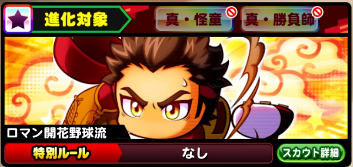
- 進化対象
- 真・怪童
真・勝負師 - 固有スカウト選手候補
- 初白百合の契約書
大桜剛の契約書
朝顔かえでの契約書
ときめき青春野球流
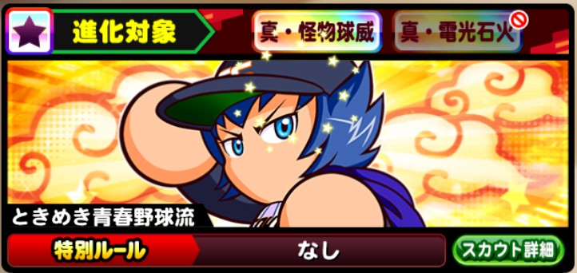
- 進化対象
- 真・怪物球威
真・電光石火 - 固有スカウト選手候補
- 三森右京の契約書
三森左京の契約書
小山雅の契約書
神宮寺光の契約書
茶来元気の契約書
青葉春人の契約書
スパルタ野球流
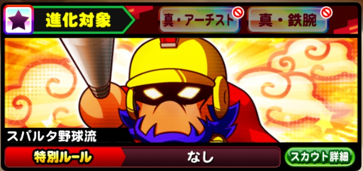
- 進化対象
- 真・アーチスト
真・鉄腕 - 固有スカウト選手候補
- 軍導英雄の契約書
聖タチバナ野球流
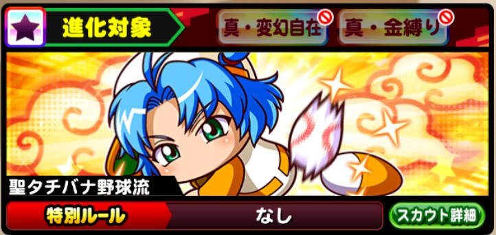
- 進化対象
- 真・変幻自在
真・金縛り - 固有スカウト選手候補
- 六道聖の契約書
橘みずきの契約書
［ムーンライト］橘みずきの契約書
［無念無想］六道聖の契約書
ワールド野球流

- 進化対象
- 真・アーチスト
真・広角砲 - 固有スカウト選手候補
- ミッキーの契約書
ギャネンドラの契約書
ヴィクターの契約書
マキシマムの契約書
ナヌークの契約書
アルヴィン＝ロックハートの契約書
ロディ・ブライトの契約書
アンヌの契約書
恋恋野球流

- 進化対象
- 真・変幻自在
真・左キラー - 固有スカウト選手候補
- 早川あおいの契約書
高木幸子の契約書
［サブマリン］早川あおいの契約書
聖ジャスミン野球流

- 進化対象
- 真・強心臓
真・変幻自在 - 固有スカウト選手候補
- 川星ほむらの契約書
美藤千尋の契約書
大空美代子の契約書
小鷹美麗の契約書
太刀川広巳の契約書
［ジャスミン］太刀川の契約書
［ジャスミン］美藤の契約書
超最強野球流
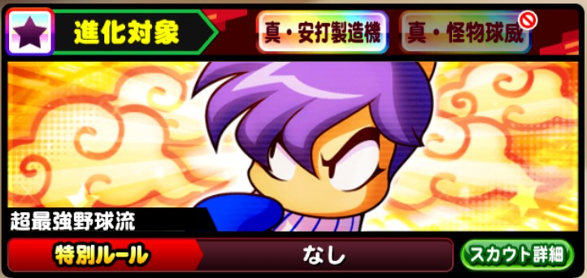
- 進化対象
- 真・安打製造機
真・怪物球威 - 固有スカウト選手候補
- 皇帝の契約書
裏あかつき野球流
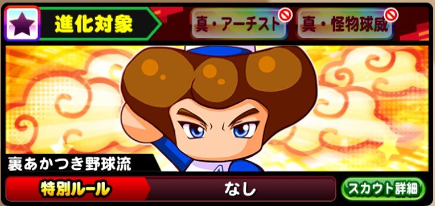
- 進化対象
- 真・アーチスト
真・怪物球威 - 固有スカウト選手候補
- アフロ猪狩の契約書
固有スカウト全員チーム加入時に得られる契約書まとめ
固有スカウト候補選手全員を既にスカウト済みだったり、契約書+〇のスキルで固有スカウト候補よりも候補数の方が多くなる状態だと、どのチームにも属さない選手がスカウトに登場します。
狙い目となる主な契約書は以下の通りです。
- ［野球マン1号］早川あおいの契約書
- ［野球マン2号］橘みずきの契約書
- ［野球マン3号］六道聖の契約書
- ［野球マン5号］小山雅の契約書
- 斬金半馬の契約書
- 西矢田来一の契約書
- 村雨の契約書
過去コラボの対戦相手まとめはコチラ
乱馬チーム※11/26まで
- 進化対象
- 真・変幻自在
真・電光石火 - 固有スカウト選手候補
- 早乙女乱馬の契約書
天道あかねの契約書
良牙チーム※11/26まで
- 進化対象
- 真・アーチスト
真・強心臓 - 固有スカウト選手候補
- 響良牙の契約書
シャンプーチーム※11/26まで
- 進化対象
- 真・広角砲
真・金縛り - 固有スカウト選手候補
- シャンプーの契約書
西球記の攻略ページ
 重要アイテム一覧※11/20更新!
重要アイテム一覧※11/20更新!
 神前試合まとめ※11/19更新!38校の進化対象・
神前試合まとめ※11/19更新!38校の進化対象・ 虹特の査定まとめ※11/24更新!17種類の査定と
虹特の査定まとめ※11/24更新!17種類の査定と おすすめ契約書&コーチ+4厳選解説※11/24更新!狙い方と
おすすめ契約書&コーチ+4厳選解説※11/24更新!狙い方と ミッション報酬西球記の105件を
ミッション報酬西球記の105件を西球記のクエスト・周回ページ


西球記の攻略（トップ）に戻る